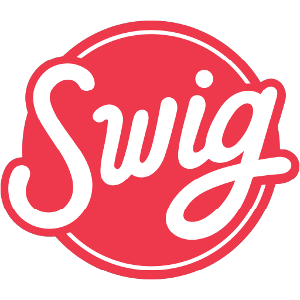

Experience
Resume
A summary of my experience, leadership, and achievements.
Experience

Sales Lead — Bronxton
Feb 2026 – April 2026- Communicated product launches, promotions, and market insights to align team execution with brand priorities — serving as the direct link between company strategy and the customer-facing experience.
- Executed and enforced brand standards across merchandising, inventory, and point-of-sale to ensure every customer touchpoint reflected a cohesive, intentional brand experience.
- Partnered with Store and District leadership on talent acquisition, onboarding, and development — building a team that understood and delivered on brand values from day one.
- Built a performance-focused culture through structured coaching, weekly development plans, and data-driven tracking — because a strong brand starts with a strong team behind it.
- Managed scheduling, inventory control, and operational accuracy to keep the brand experience running smoothly at every level of the store.

General Manager — Swig (Orem)
Aug 2025 – Jan 2026- Partnered with regional leadership on marketing strategy, brand positioning, and financial planning to drive measurable gains in customer experience and revenue performance.
- Redesigned customer-facing workflows to cut service times by 33%, pushing the location to top 5 in Utah — proof that operational excellence and brand experience are the same thing.
- Scaled the team by 25–30% and built the region's most leadership-stable unit, ensuring every customer interaction reflected consistent brand standards at high volume.
- Directed full talent acquisition — screening 300+ resumes, leading interviews, and building onboarding programs designed to translate brand values into team behavior from day one.
- Chaired weekly leadership meetings to review performance metrics, align on brand priorities, and execute strategic initiatives across the location.
- Managed full P&L accountability, labor strategy, and profitability controls — balancing business performance with a people-first culture that kept the brand experience strong.
- Team leader for Guinness World Record: most drinks served in a single hour (4,500) — a high-visibility brand activation that put the location on the map.
Youth Counselor — For the Strength of Youth
May 2025 – Aug 2025- Managed the end-to-end experience for 40+ participants at a time — designing and delivering workshops, team-building sessions, and motivational programming that built real engagement and lasting impact.
- Communicated programs and messaging fluently in both English and Spanish, adapting tone and delivery to diverse audiences across multiple regions.
- Partnered with 60+ staff and directors to maintain consistent messaging, programming quality, and experience standards across every touchpoint of a complex multi-day event.
- Oversaw logistics, scheduling, and event coordination to ensure seamless execution — because a great experience lives or dies in the details.
Shift Lead — Swig (Cottonwood Heights & Provo)
2022–2023, 2025- Delivered a fast, accurate, and on-brand customer experience to 200+ guests per shift — building the frontline intuition for what makes or breaks a brand at the point of interaction.
- Mastered 50+ custom menu items and executed them with consistency, understanding that product accuracy and speed are core to customer loyalty and brand reputation.
- Navigated high-pressure customer situations with composure and care, protecting the brand experience even in its most challenging moments.
Education
Brigham Young University — Provo, Utah
2022–Present- B.S. Marketing — BYU Marketing Team Member
- Skills: Tableau, SQL, Excel Automation (VBA), ERP Systems, Project Management, Web Development (HTML & CSS)
Leadership & Service
Missionary — Newport Beach California Mission
2023–2025- Trainer, District Leader, Zone Leader — led large groups and mentored individuals across multiple communities in English and Spanish.
- Built trust and genuine connection with diverse audiences daily — the foundation of everything brand work requires.
- Studied and spoke Spanish across multiple dialect regions, developing fluency and cultural sensitivity that informs how I think about audience and communication.
Achievements & Skills
📖 Guinness World Record Team Leader
⚜️ Eagle Scout
🎖️ U.S. Marines Scholastic & Leadership Award
🌎 Spanish Translation Certificate
📊 Tableau & SQL
💻 Excel Automation (VBA)
🌐 HTML & CSS